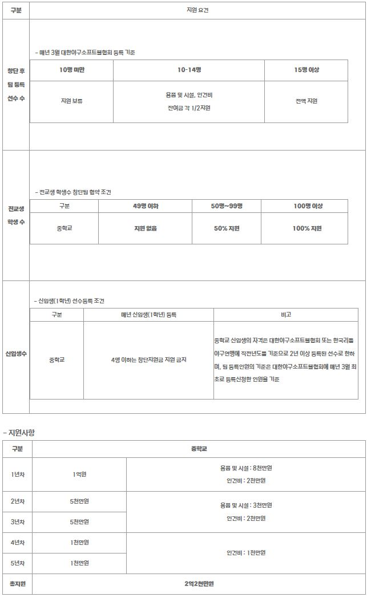

Q. 리그 개요
1982년 출범하여 2015년 이후 현재 10개 구단 체제로 운영 중이며, 단일 리그제로 각 구단별 144경기(구단 간 16차전)씩 총 720경기가 진행됩니다.
포스트시즌 시스템, 변경되는 규정 등의 추가 리그 개요는 아래를 참조 바랍니다. 링크
Q. 우천취소 규정이 궁금합니다.
우천취소는 경기 3시간 전부터 해당 구장의 날씨와 그라운드 등 전반적인 상황을 종합적으로 고려하여 경기운영위원(경기 개시 이후 심판)이 결정할 수 있습니다.
경기 취소 여부가 결정되면 KBO 홈페이지와 어플리케이션에서 가장 빠르게 확인하실 수 있습니다.
- 공지되는 곳은 홈페이지 메인 화면의 대진표입니다.
- 경기운영위원 배정 정보는 제공되지 않습니다.
Q. 황사나 미세먼지 때문에 경기가 취소될 수도 있나요?
네, 황사나 미세먼지로 인해 경기가 취소될 수도 있습니다. 세부 규정은 다음과 같습니다
KBO 리그 규정 제27조 "기상 상황으로 인한 경기취소 여부"
경기개시 예정 시간을 기준으로 강풍, 폭염, 안개, 미세먼지, 황사 등의 기상 특보(경보 이상)가 발령되어 있을 경우 다음과 같이 경기취소 여부를 결정한다. 단, 경기개시 전에 미세먼지
(초미세먼지 포함) 경보가 발령되었거나 경보 발령 기준 농도를 초과한 경우 취소 여부를 결정하고 경기개시 후에 미세먼지 경보가 발령되었을 경우 경기 취소 여부를 결정한다 (경기 중 경보 발령시
해당 이닝 종료 후 취소 여부 결정).
Q. 경기 개시 시간이 궁금합니다.
경기 개시 시간은 다음과 같습니다.
| 월 |
평일 |
토요일 |
일요일/공휴일 |
| 3월 |
18:30 |
17:00
(개막전 14:00) |
14:00 |
| 4월 |
| 5월 |
| 6월 |
17:00 |
| 7월 |
18:00 |
17:00 |
| 8월 |
| 9월 |
17:00 |
14:00 |
| 10월 |
* 경기시간은 구단 또는 중계 방송사 요청 등 사정에 따라 변동될 수 있습니다.
Q. 선발투수 예고는 언제 예고 되나요?
선발 투수는 다음 규정에 따라 통보되며, KBO 홈페이지 및 어플리케이션 등에서 확인하실 수 있습니다
KBO 리그 규정 제15조 타순표의 교환 및 발표
5. 선발투수 예고
구단 담당자(매니저)는 이동일일 경우 낮 12시까지 KBO로 선발투수 예고를 통보하고, 주중, 주말연전(화~토)의 경우 경기 종료 직후 KBO 기록위원에게 통보한다.
Q. 연장전은 몇 회까지 하나요?
KBO 정규시즌의 연장전은 12회(KBO 포스트시즌 15회)까지로 하며 승패를 가리지 못할 경우에는 무승부가 됩니다.
Q. 당일 선수등록현황은 언제부터 확인할 수 있나요?
선수등록현황은 경기 개시 2시간 전부터 확인할 수 있습니다. 선수등록 관련 리그규정은
KBO 리그 규정 제14조 현역선수 등 등록 항목을 참조하시기 바랍니다.
Q. 퓨처스리그 개요
퓨처스리그는 총 11개팀이 북부리그(한화, 고양(히어로즈), SSG, LG 두산)와 남부리그(상무, 롯데, NC, KIA, KT, 삼성)로 나뉘어 운영됩니다. 총 625경기의 일정으로 북부리그는
팀당 111경기, 남부리그는 팀당 116경기(상무 115경기)를 거행합니다. 번외경기로는 롯데, 삼성, NC가 일본 NPB의 소프트뱅크와 각 3경기씩 총 9경기를 거행합니다.
퓨처스리그 경기 개시 시간은 오후 1시이며, 혹서기인 7/7 ~ 8/20 까지를 서머리그로 정하고 선수들의 건강보호와 체력 안배를 위해 이 기간 경기는 야간 경기인 저녁 6시로 편성될 수
있습니다.
*일부 구장 상황에 따라 경기 시간과 장소가 변경될 수 있습니다.
Q. 퓨처스리그 구장 정보가 궁금합니다.
| 북부리그 |
남부리그 |
| 구단 |
구장 |
구단 |
구장 |
| 한화 |
서산야구장 |
상무 |
문경 상무 야구장 |
| SSG |
강화 SSG퓨처스필드 |
KIA |
함평 기아 챌린저스 필드 |
| 고양 |
고양야구 |
KT |
익산야구장 |
| LG |
이천 LG 챔피언스파크 |
NC |
마산야구장 |
| 두산 |
이천 두산 베어스파크 |
삼성 |
경산 삼성라이온즈 볼파크 |
| - |
- |
롯데 |
김해 상동야구장 |
보다 자세한 사항은 각 구단 홈페이지를 참고해주시기 바랍니다.
Q. 퓨처스리그 선발 라인업은 언제 알 수 있나요?
퓨처스리그 경기의 라인업은 경기 종료 후 KBO 퓨처스리그 경기 일정/결과 페이지의 경기기록을 통해 확인하실 수 있습니다.
Q. 퓨처스리그 실시간 스코어를 알 수 있을까요?
퓨처스리그는 경기 진행 중 수시로 스코어가 업데이트됩니다. 최종 경기 결과는 경기 종료 후 KBO 퓨처스리그 경기 일정/결과 페이지에서 확인하실 수 있습니다.
Q. 비디오 판독센터는 어떻게 운영되나요?
퓨처스리그는 총 11개팀이 북부리그(한화, 고양(히어로즈), SSG, LG 두산)와 남부리그(상무, 롯데, NC, KIA, KT, 삼성)로 나뉘어 운영됩니다. 총 625경기의 일정으로 북부리그는
팀당 111경기, 남부리그는 팀당 116경기(상무 115경기)를 거행합니다. 번외경기로는 롯데, 삼성, NC가 일본 NPB의 소프트뱅크와 각 3경기씩 총 9경기를 거행합니다.
퓨처스리그 경기 개시 시간은 오후 1시이며, 혹서기인 7/7 ~ 8/20 까지를 서머리그로 정하고 선수들의 건강보호와 체력 안배를 위해 이 기간 경기는 야간 경기인 저녁 6시로 편성될 수
있습니다.
*일부 구장 상황에 따라 경기 시간과 장소가 변경될 수 있습니다.
Q. 상벌위원회는 어떻게 운영되나요?
상벌위원회는 아래 <KBO 규약 상벌위원회 규정>에 의거하여 운영됩니다.
제1조 [근거] 총재의 자문기관으로 상벌위원회를 둔다.
제2조 [목적] 프로야구 발전과 명예를 위하여 현저하게 공헌을 하거나, KBO 정관, KBO 규약, KBO 리그 규정, 야구규칙 등 제규정을 위배하여 KBO 및 KBO 리그(KBO 퓨처스리그
포함)의 품위를 손상케한 구단 및 개인에 대하여 적절한 상벌을 과하는데 그 목적이 있다.
제3조 [구성] 상벌위원회 위원장 및 위원은 총재가 위촉하는 야구 관계인사로 구성한다.
제4조 [소집] 총재가 필요시 소집한다.
제5조 [의결] 과반수 이상 출석으로 성원되며, 출석위원 과반수 이상의 찬성으로 의결한다.
제6조 [운영]
① 상벌위원회는 제재사건이 발생하였을 경우 사건발생 5일 이내에 위원회를 소집하여 의결함을 원칙으로 한다.
② 필요시 참고인 진술을 위해 관련 당사자의 참석을 통보할 수 있다.
③ 제재는 KBO 규약 및 KBO 리그 규정 벌칙내규에 의거, 징계함을 원칙으로 한다.
제7조 [임기] 상벌위원의 임기는 1년으로 하며 중임도 가능하다.
제8조 [심의사항] 위원회는 다음 사항을 심의한다.
① 몰수경기에 대한 판정
② 감독, 코치, 선수, 심판위원, 기록위원의 표창과 제재
③ 기타 총재가 위임하는 사항
제9조 [보수] 본 위원회의 위원은 무보수로 한다.
제10조 [부칙] 이 규정은 1990년 5월 1일부터 시행한다.
[2008.2.19 ➜ 2017.1.1 ➜ 2021.2.19 개정]
Q. 도핑테스트는 언제, 어떤 방식으로 실시되나요?
도핑테스트는 프로스포츠 도핑방지규정에 의거, 한국도핑방지위원회(KADA)에서 주관하며 불시에 도핑검사관 또는 혈액채취요원이 선수를 직접 방문하여 실시합니다. 대상은 KBO 등록 선수이며, 대상자
선정 방식은 KADA의 ｢표적검사 업무처리 지침｣에 따라 표적검사 또는 무작위 선정으로 도핑테스트를 진행합니다. 세부 내용은 KADA 홈페이지 (http://www.kada-ad.or.kr)를
참고하여 주시기 바랍니다.
Q. 심판 오심 관련
KBO 심판위원의 오심 발생시 인사고과에 반영하고 있습니다. 심판위원의 심한 오심이 거듭될 때에는 KBO 벌칙내규에 따라 경고, 제재금 100만원 이하, 출장 정지 10경기 이하의 제재를
합니다.
심판위원은 윤리규정을 통해 공정성과 청렴함을 바탕으로 어떠한 경우에도 부정청탁, 부정행위 등에 따라 판정에 특혜를 주는 행위를 할 수 없도록 규정하고 있습니다. KBO는 심판위원을 위해 부정행위
방지 교육을 정기적으로 실시하고 있으며, 경기운영위원이 모든 경기에 부정행위 모니터링을 실시하고 있습니다.
Q. SAFE 캠페인이란?
SAFE 캠페인이란 안전하고 쾌적한 야구장 환경을 조성하고, 성숙한 관람 문화의 정착을 돕기 위해 Security(안전), Attention(주의), Fresh(쾌적),
Emergency(응급상황) 등 다양한 안전관람수칙을 공유하는 한편 2015 시즌부터 적용되는 경기장 안전 ∙ 보안 강화 규정을 팬 여러분께 알리기 위한 야구 관람 안전 캠페인입니다.
KBO 경기장 안전정책에 관한 자세한 안내는 아래 페이지를 참조해주시기 바랍니다.
KBO 경기장 안전정책
Q. 안전 보안 규정의 주요내용은 무엇인가요?
선수와 관람객의 안전을 위협할 수 있는 모든 유리병, 총량 1L 초과 PET 및 알루미늄 캔 용기에 담긴 음료(미개봉 상태의 음료에 한해 1인당 PET 1개, 캔 2개까지 허용), 얼린 생수의
경기장 내 반입이 제한됩니다.
과도한 물품의 반입으로 인해 관람객의 이동과 통행을 방해하고 경기장 내 시설물(좌석∙컵홀더 등)을 활용하여 거치하는 등 타인의 경기장 이용에 지장을 초래하거나, 유사시 원활한 대피를 어렵게 하는
일이 발생하지 않도록 반입 가능한 소지품의 품목, 크기와 개수가 제한됩니다.
관람객 1인당 가방 1개(가로 45cm x 세로 45cm x 폭 20cm)와 쇼핑백류 1개(가로 30cm x 손잡이 포함 세로 50cm x 폭 12cm)까지 지참이 가능하며, 그 외의 가방,
상자 • 아이스박스를 비롯한 돗자리, 휴대용 의자, 휴대용 간이테이블과 같은 물품들은 반입이 허용되지 않습니다.
이와 같은 조치들은 최소한의 경기장 안전수칙으로서, 보다 더 안전하고 쾌적한 야구 관람 환경을 만들어 나가는데 중요한 역할을 할 것으로 기대하고 있습니다. 안전한 관람 문화 정착을 위하여 야구팬
여러분의 동참과 협조를 부탁 드립니다.
Q. 경기장 안전 강화의 배경은 무엇인가요?
1982년 개막한 KBO 리그는 팬 여러분의 뜨거운 관심과 사랑을 바탕으로 2011년부터 6년 연속 600만 관중, 2016년 최초로 800만 관중을 돌파하는 등 대한민국을 대표하는
프로스포츠로서 자리를 잡아가고 있습니다. 그러나 리그가 한 단계 더 도약하기 위해서는 보다 더 안전하고 쾌적한 관람 환경을 마련하여 팬 여러분들이 더욱 편안하고 재미있게 야구를 즐길 수 있도록
지속적인 개선이 필요한 상황입니다.
Q. 경기장 내 주류 반입이 금지되나요?
주류를 포함한 모든 캔 · 병 · 1L 초과 PET(1L 이하 미개봉 비 알코올성 PET 음료에 한해 1인당 1개 허용) 음료 및 얼린 생수는 경기장 내 반입이 제한됩니다. 이에 따라 해당
제품은 경기장 내 매점에서도 판매가 제한될 예정이며 부득이한 사정으로 판매될 시에는 종이 ∙ 플라스틱컵에 담아서 구매자에게 전달이 이루어지게 되고, 특히 경기장 내 주류 판매의 경우 안전사고의
주 원인인 과음을 방지하기 위해 한 경기당 구매할 수 있는 주류의 양이 1인당 최대 2리터 이하로 제한되며 8회 말 종료 이후 판매가 중단될 수 있습니다. (단, 저도 주류(6도 이하)의 경기장
내 반입은 경기장에서 제공하는 종이 ∙ 플라스틱컵에 담길 경우에 한하여 제한된 양으로 일부 허용될 수 있습니다.)
Q. 소지품의 품목, 크기와 개수를 제한하는 이유가 무엇인가요?
KBO가 지속적인 보안검색 규정 강화를 통해 반입 가능한 소지품의 품목, 크기와 개수를 제한하고 확대하는 이유는 역시 야구팬 여러분에게 안전하고 쾌적한 관람 환경을 제공하기 위함입니다. 안전한
경기 관람 환경에 직접적인 위협이 되는 위험 물품(칼, 가위 등 뾰족하거나 날카로운 물품, 취사도구 등)을 포함, 경기 진행을 적극 저해할 수 있는 물품(소음이 심한 응원 도구, 투척 가능성이
있는 물품, 레이저 포인터, 반려동물 등)의 반입을 전면 제한하고 있습니다.
Q. 휴대용 간이테이블의 반입이 제한되는 이유는 무엇인가요?
현재 돗자리, 휴대용 의자, 휴대용 간이테이블 등 관람객들의 관람과 통행에 방해가 될 가능성이 있는 물품 및 경기장 내 시설물(좌석, 컵홀더 등)을 활용하여 거치하는 방식의 물품은 반입을
제한하는 것을 원칙으로 두고 있습니다. 휴대용 간이테이블의 반입이 제한되는 것은 관람객의 통행을 방해할 가능성이 높으며, 이용자의 움직임에 제한을 주어 파울 타구가 날아들 시 안전 위험이 있고,
컵홀더 거치방식의 경우 경기장 시설물을 훼손할 우려도 있기 때문입니다.
* 단, 구장별로 잔디석 등 구단이 특별히 허용하는 구역은 예외로 두는 경우도 있습니다. 세부 운영에 대한 확인은 구단에 문의 부탁드립니다.
Q. 음식물의 반입도 제한되나요?
반입금지 품목에 해당하지 않는 음식물이라면 반입을 특별히 제한하지는 않습니다. 따라서 소지품의 크기와 개수 허용범위 내에서의 음식물 반입은 가능합니다. 그러나 타인의 안전과 쾌적한 관람환경을
저해할 수 있는 음식물(뜨거운 국물류나 냄새가 심한 음식물류)이라고 판단될 경우에는 반입이 제한될 수 있으니 유의하시기 바랍니다.
Q. 구장에서 흡연도 가능한가요?
KBO 리그 전 구장은 국민건강증진법에 따라 금연 시설에 해당되며, 경기장 내외에 별도 지정된 흡연 구역에서만 흡연이 허용됩니다. 지정된 구역 외 복도, 계단 등의 시설 공간에서 흡연은 전면
제한하고 있으니 관람객 여러분은 각 구장의 흡연 구역 안내를 참고 부탁드립니다
Q. 모든 구장에서 동일한 규정이 적용되나요?
구단별 예외 규정이 존재합니다. 2015 시즌부터 적용되는 안전 강화 규정은 보다 더 안전한 경기장 환경을 만들기 위해 전 구단이 함께 논의를 거쳐 마련한 최소한의 안전 수칙으로서, KBO 리그
전 구장에 공통적으로 적용되고 있습니다. 그러나 각 경기장 별 특이 사정 등을 고려하여 유연한 운영을 위해 일부 예외 규정이 있을 수 있습니다. 팬 여러분께서는 경기장 이용에 예상치 못한 불편을
겪지 않도록 방문 전 구단 홈페이지 등을 통해 해당 구장의 안전 규정을 확인하여 주시기 바랍니다.
Q. 다른 프로스포츠의 안전 규정은 어떤가요?
미국 메이저리그를 비롯하여 잉글랜드 프리미어리그 등 대부분의 해외 프로스포츠에서는 안전사고 방지를 위해 캔 · 병 · PET 용기 등 경기장 내 안전을 위협할 수 있는 물품들에 대한 반입을
전면적으로 금지하고 있습니다. 이러한 물품들의 소지 여부를 검사하기 위해 입장 게이트에서 철저한 보안검색을 실시하고 있으며, 관람객들도 이에 협조하여 보안검색 시간을 줄이기 위해 소지품 없이
경기장에 오거나, 속이 잘 보이는 투명한 비닐백에 물건을 담아오는 방식으로 안전한 관람 환경 유지에 동참하고 있습니다. NFL의 경우 지난 2013년부터 새로운 경기장 안전 규정을 도입하여
밖에서 내용물이 보이는 투명가방 이외의 모든 가방의 경기장 반입 금지를 실시하는 등 경기장 안전을 위해 총력을 기울이고 있습니다.
Q. 관람객이 퇴장 조치를 받을 수도 있나요?
경기장 내 다음과 같은 금지행위 기도자는 사안에 따라 ① 경고, ② 입장거부 또는 퇴장, ③ 입장금지, ④ 경찰인계의 절차에 따라 조치될 수 있습니다. 또한 홈 구단은 관련법에 의거하여
해당기관에 처벌을 요구할 수 있습니다.
| 구분 |
조치 |
| 반입금지물품의 반입을 시도하는 행위 |
경고 후 입장거부 |
| 보안검색을 거부하거나 보관에 응하지 않는 행위 |
경고 후 퇴장 |
| 타인의 관람에 방해를 주는 자 |
입장 거부 |
| 상습적인 금지행위 기도자로 KBO 혹은 구단이 정한 자 |
입장 금지1 |
| 정치∙종교∙인종차별 등 개인이나 단체의 주의∙주장 행위 |
입장거부 또는 퇴장 |
개인∙단체 이익을 위한 상업적 행위 및
상대(팀)를 비방하기 위한 공격적 행위자 |
경고 후 입장거부 또는 퇴장 |
| 출입도구(티켓 등) 미 소지자 |
입장거부 또는 퇴장 |
| 지나친 알코올 섭취자 |
경고 후 입장거부 또는 퇴장 |
| 범죄행위 기도자, 불법 스포츠도박 관련으로 의심되는 자 |
현장 보존∙신고 후 경찰인계 |
| 그라운드 난입 등 경기 진행에지나친 지장을 초래하는 기타 행위 |
퇴장 및 경찰인계 |
Q. KBO의 중학교 야구창단팀 지원에 대해 알고 싶습니다.
2018.5.10 부터 아래 조건을 충족해야 KBO 지원이 가능합니다.

Q. KBO의 타 아마추어 야구활성화 활동에 대해 알고 싶습니다.
- 유소년/아마추어 대회 개최 및 운영
: U-12, U-15 대회, 미래유소년 지도자 티볼대회, 챌린저스 직장인 야구대회
- 야구 교육 시스템 지원
: KBO 유소년 캠프, 야구교실, 유소년 사이버 아카데미 운영, 교육 물 제작
- 초, 중, 고 야구부 창단학교 실사 및 면담
- 순회코치 파견 및 지도자 간담회 개최
Q. 올스타전, 포스트시즌, 골든글러브 시상식 등 KBO 주최 행사를 관람 또는 참여하고 싶습니다.
각 이벤트의 일정과 계획이 확정되고 난 후 KBO 홈페이지와 보도자료를 통해 입장권 신청 및 참여 방법을 확인하시기 바랍니다.
Q. 중계방송을 보려면 어떻게 해야하나요?
KBO 리그 중계방송 일정은 KBO 홈페이지의 메인 페이지에 표시된 [중계일정] 탭을 통해 확인하실 수 있습니다.
Q. KBO 리그 영상을 사용하고 싶습니다. 어떻게 하면 되나요?
영상은 구매 또는 협의된 사항에 대해 사용할 수 있으며, 영상 구매 및 사용에 관한 문의는 KBO 마케팅 자회사인 KBOP(02-3460-4600 내선 연결)로 문의하시기 바랍니다.
Q. 구단 엠블럼 및 구단 로고는 구할 수 없나요?
구단 관련 사항 및 관련 자료는 해당 구단에서 관리 합니다.
구단 측으로 문의해주시기 바랍니다.
Q. 회원정보 수정은 어떻게 하나요?
홈페이지 로그인 후 홈페이지 우측 상단 [회원정보 수정]을 클릭하시면 비밀번호, 전화번호 및 주소 등을 수정할 수 있습니다. 다만, 홈페이지 개편 전에 가입하신 회원께서는 회원 정보 항목
누락으로 회원 정보 수정이 불가능할 수 있습니다. 이런 경우, 탈퇴 후 재가입 부탁드립니다. 이용에 불편을 드리는 점 양해 부탁드립니다.
Q. 회원탈퇴는 어떻게 하나요?
홈페이지 우측 상단 [회원정보 수정]을 클릭하신 후, 화면 상단의 오른쪽 탭인 [회원탈퇴]를 클릭하시면 됩니다.
Q. KBO 공식 어플리케이션은 어떻게 이용할 수 있나요?
KBO 공식 어플리케이션(앱)은 구글 플레이스토어와 애플 앱스토어를 통해 다운로드 받으실 수 있습니다.
- 구글 플레이스토어 -
- 애플 앱스토어-
경기 일정 및 결과, 팀/선수 기록, 상품 구매 및 티켓 예매, 뉴스, 하이라이트 등의 서비스를 제공하고 있습니다.
Q. KBO 마켓 이용 관련 문의사항이 있습니다.
KBO 마켓 관련 질문은 KBO 마켓 고객센터인 1688-8176으로 전화 주시면 빠르게 조치를 취해드리도록 하겠습니다.
Q. 경력증명서를 발급하고 싶습니다.
경력증명서 발급은 KBO 홈페이지 상단 [선수] 탭의 [경력증명서 신청]하단에 표기된 KBO 증명서 발급시스템을 통해서 발급이 가능합니다. 이를 위해 KBO 홈페이지와 별도로 회원가입을 해야하며
기타 문의 사항은 KBO 증명서 발급시스템 내 고객센터를 참고해 주시기 바랍니다.
- KBO 증명서 발급시스템을 통해서만 발급이 가능합니다.
- 방문을 통한 신청과 발급 서비스는 제공하지 않습니다.
- 프로 리그 선수, 코치 경력이 없는 경우 회원가입이 제한될 수 있습니다.
Q. 입장권 관련 문의사항이 있습니다.
입장권 관련 사항은 구단별로 각기 다르게 운영하고 있습니다. 예매방법, 티켓 오픈 시간, 현장판매 여부, 우천취소 후 조치, 환불 처리 등에 대해서는 아래 구단별 입장권 안내 페이지 및 예매처
웹사이트를 참고 바랍니다.
-티켓링크(SSG, 한화, KIA, 삼성, LG, KT)
:
http://www.ticketlink.co.kr
-인터파크(두산, 키움)
:
http://ticket.interpark.com
-롯데 :
http://ticket.giantsclub.com
-NC :
http://ticket.ncdinos.com/login